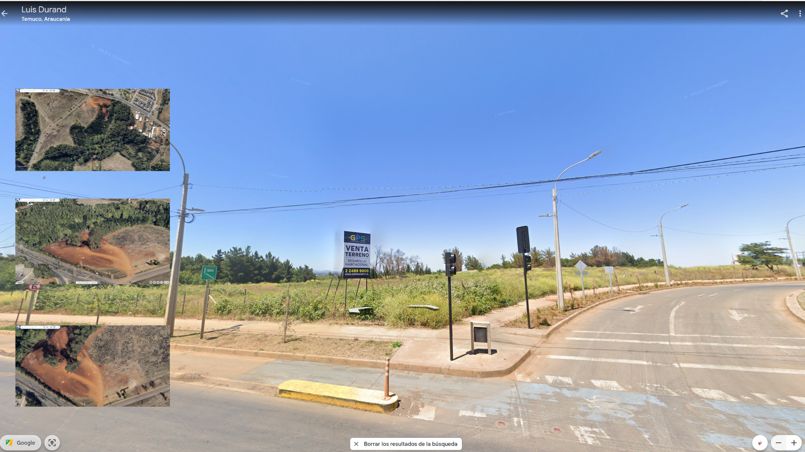

Primer intento 12 de abril, 2025
Fabricados en Taiwán y Japón, intervenidos por una compañía adquirida por el Mossad con sede en Budapest, distribuidos por una empresa búlgara, comprados por miembros de Hezbollah en el sur de El Líbano y Siria; 37 muert+s, 2 niñ+s; 3.000 personas heridas en centros comerciales y hospitales. El cambio tecnológico que implementaba la organización, con llamamientos a enterrar bajo tierra, en cajas metálicas, todos los teléfonos celulares, tenía como objetivo intentar establecer un sistema de comunicación de una sola vía, impedir la capacidad de triangulación y geolocalización de dispositivos móviles que la tecnología israelí posibilita, sirviéndose del registro del desarrollo, aparentemente permanente, bidireccional, de nuestros teléfonos con la red de antenas de radiofrecuencias existentes por todo el planeta. Los buscapersonas emitieron el pitido de un falso mensaje; luego, se callaban antes de explotar. Causar lesiones con explosivos es una cuestión de proximidad. Eligiendo unas verduras en el supermercado, y de pronto, al frente, un tipo cogiendo tomates mira su teléfono y bum! Se caen las cosas de las manos mientras intento proteger la cara, no se ve, la potencia de la explosión nubla el oído, se pierde el equilibrio, cayendo al intentar huir buscando el origen del caos. Sin entender nada del mundo durante unos segundos. Sirenas, jugo de fruta reventada, tal vez sangre en los labios. Esquirlas en la cara, sangre al frente, en los ojos de un desconocido, tirado en el suelo, rezando a gritos. Ver ya no es importante, ni para quién ataca, ni como límite autoimpuesto, legal, ético ó político, frente a las consecuencias desmembradas, de quien recibe el ataque. La deshumanización funciona: configura modos de una máquina que extirpa en función de objetivos televisivamente precisos, democráticamente necesarios, siempre difusos, inmemoriales si los desplazamos de sus agenciamientos tecnopolíticos. Pero “ya no se trata de precisar cómo la violencia del orden se transforma en tecnología disciplinaria, sino de exhumar las formas subrepticias que adquiere la creatividad dispersa, táctica y artesanal…”.
Me voy a comer el mundo. El tuyo, el mio.
Comer como antropofagia
Tropicalismo: O tropicalismo não pretendia ser porta-voz da revolução social, mas revolucionar a linguagem e o comportamento na vida cotidiana, incorporar-se à sociedade de massa e aos mecanismos do mercado de produção cultural, sem deixar de criticar a ditadura. Articulava aspectos modernos e arcaicos, buscando retomar criativamente a tradição cultural brasileira e incorporar de forma antropofágica influências do exterior (2007:189).

¿Cómo por medio del ejercicio de la autoficción, los lugares con los que nos vinculamos diariamente, como jardines, terrenos abandonados, sitios eriazos, pueden transformarse en relatos colectivos cuando se intervienen?